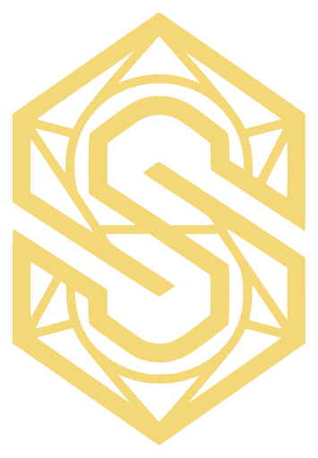

A dark, brass-on-charcoal
system for Rails & Hotwire.
Every token, partial and controller below is lifted straight from the live
Skill Planner. Tokens are defined once in a Tailwind 4 @theme
block and become utilities; components ship as plain app/views/shared
partials with Stimulus behaviour and Turbo wiring. Copy any block and paste it into your app.
Setup & tokens
One CSS entrypoint. The @theme block defines design tokens that Tailwind compiles into utilities — so bg-card, text-brass and rounded-panel all just work. This very page loads that same block live.
@theme rather than a JS config. Keeping the original --color-* names means existing inline var(--color-brass) references keep resolving during migration.
Color
Four charcoal surfaces, a three-step text ramp, the brass brand trio, and three semantics. White is reserved for "current" values; brass for "planned".
Typography
Inter throughout. Display weights are extrabold with tight tracking; labels are bold uppercase at 0.6px tracking. Numerals are always tabular.
24px · 800 · -0.5px BuckTBC
26px · 800 · tnum 110
14px · 600 Heuksal — sword mastery series
11–14px · 700 · 0.6px · UPPER Skill points
11px · 700 · pills Lv 110 · 32 skills
Radius & surfaces
A four-step radius scale maps to roles. The demo squares below carry real Tailwind rounded-* utilities generated from the @theme radius tokens.
Logo & favicon
A single brass S-emblem — a faceted hex gem — carries the whole brand. Ships as logo.svg (scales to any size) with a logo.png raster fallback and an SVG favicon.

 SRO Lab — Design System
favicon.svg · 16px
SRO Lab — Design System
favicon.svg · 16px
<%# <head> — brand favicon: vector first, raster fallback, touch icon %>
<link rel="icon" href="<%= asset_path "./favicon.svg" %>" type="image/svg+xml">
<link rel="alternate icon" href="<%= asset_path "./logo.png" %>" sizes="any">
<link rel="apple-touch-icon" href="<%= asset_path "./logo.png" %>"><%# Emblem lock-up reused by the top bar and the splash %>
<%= link_to root_path, class: "flex items-center gap-2.5 font-bold text-base" do %>
<%= image_tag "./logo.svg", alt: "SRO Lab", class: "h-7 w-7" %>
<span>SRO Lab</span>
<% end %>logo.svg, logo.png and favicon.svg live in app/assets/images. The SVG is the master — the PNG (512px, transparent) is only for surfaces that can't render SVG, like the touch icon.
Buttons
One partial, three variants. Brass-gradient primary, carded ghost, square icon. All clear the 44px touch target.
/* application.tailwind.css — shorthand used by the partial */
@utility btn-primary {
@apply inline-flex items-center justify-center rounded-field
min-h-tap px-4 py-[9px] text-[13px] font-extrabold
tracking-[0.2px] text-bg cursor-pointer
bg-gradient-to-b from-brass-hi to-brass;
}
@utility btn-ghost {
@apply inline-flex items-center justify-center rounded-field
min-h-tap px-4 py-[9px] text-[13px] font-semibold
text-text cursor-pointer bg-card border border-line
hover:bg-card-hi;
}Top bar + brand mark
Sticky, frosted, full-bleed. Brand lock-up on the left, an :actions slot on the right that holds the login button or the characters pill.
Tabs — pill & underline
Two variants from one partial. Pills (a well with a raised active chip) pick the mastery type; underline subtabs pick the mastery. Driven by the tabs controller, which emits tabs:change.
Badges, pills & tags
Tone-driven chips. The Current → Planned legend establishes the white/brass language used everywhere else.
Stat rows
The signature pattern: white current + green delta = brass planned. Stack several in a divided card; each row is the unit a Turbo Stream re-renders.
<div id="plan_summary">
<div class="overflow-hidden rounded-control bg-card-hi border border-line">
<%= render "shared/stat_row", label: "Skill points",
current: 3_210_000, planned: 6_440_000, format: :comma %>
<%= render "shared/stat_row", label: "Mastery total",
current: 210, planned: 440 %>
<%= render "shared/stat_row", label: "Required level",
current: 92, planned: 110 %>
</div>
</div>Character identity bar
Crest avatar, name in brass, race + level cap. Shared verbatim by the home hero and the editor header so the two screens read as one product.
Skill row + stepper
Icon, name, brass level, and a − / + stepper (brass primary on +). Each row is a dom_id target so a Turbo Stream can swap it after the server clamps the level.
Overlays — modal · drawer · sheet
All three are native <dialog> elements sharing the dialog controller, so Esc, backdrop-dismiss and focus-trap are free. Modal centers (full-height on mobile); drawer slides from the right; sheet rises from the bottom.
Hotwire — Turbo Frame & Stream
Two end-to-end recipes: the editor pops in a lazy <turbo-frame> modal, and stepper changes broadcast a Turbo Stream that swaps the skill row + recomputes the summary totals — no reload.
#modal →
controller renders the <dialog> partial inside the frame →
dialog#open fires on frame load. A + tap PATCHes,
the server replies with the stream above, and #plan_summary re-renders in place.